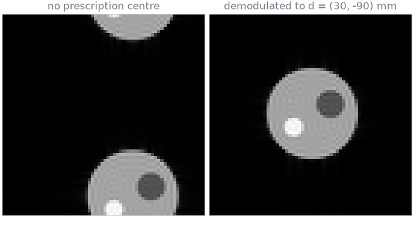
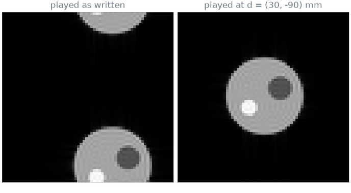

Note
Go to the end to download the full example code.
Raw-data enrichment and reconstruction#
The scope of this notebook is to enrich a simulated series the way the reconstruction proxy does, and to reconstruct it with a reconstruction plugin: what the sequence supplies to an MRD stream that carries no encoding information, and how a field-of-view offset applied to the sequence when its IR is built places an object away from the isocentre at the centre of the image.
The series is simulated rather than acquired: a phantom of three disks, whose k-space is known analytically, sampled at the k-space locations of a pypulseqpp 2D gradient echo and placed away from the isocentre. The prescription is described in The scanner IR and the enrichment in Raw-data enrichment and routing.
Outline:
Sequence and readout table. The readouts of the sequence, as the proxy tabulates them from a stored design.
Prescription. The RF and ADC frequency and phase offsets that move the field of view of the logical-frame design to the prescribed centre.
Simulated series. A phantom away from the isocentre, received through the phase of each readout and streamed without encoding counters, flags or encoding spaces.
Enrichment. The header and acquisition fields the table supplies.
Reconstruction. The shipped Cartesian FFT plugin, for the design played as written and played at the prescribed offset.
Sequence and readout table#
The sequence is written as a stored design holds it, in the binary
Pulseq form and in the logical frame, and tabulated with
SequenceTable: one row per readout in play order,
with its encoding counters, flags and dwell time.
readout_k() returns the k-space location
of each sample of a readout, in 1/m, integrated when it is asked for. The
simulation below joins them over the scan.
import tempfile
from pathlib import Path
import ismrmrd
import ismrmrd.xsd as xsd
import numpy as np
import pypulseqpp as pp
from pypulseqpp.sequences.sequence.gre2D_sequence import Gre2DApp
from pulserver.ir import prescribe
from pulserver.vre import SequenceTable, enrich_acquisition, enrich_header
system = pp.Opts(max_grad=40, grad_unit="mT/m", max_slew=150, slew_unit="T/m/s")
work = Path(tempfile.mkdtemp())
app = Gre2DApp(system, n_x=64, n_y=64, te=None, tr=None, n_dummy=0)
files = app.write(work / "sequence.seq", offline=False)
table = SequenceTable.read(files[0])
k = np.hstack([table.readout_k(row) for row in range(len(table))])
first_sample = np.cumsum(np.r_[0, table.num_samples[:-1]])
print(f"{len(table)} readouts of {table.num_samples[0]} samples")
print("LIN of the first readouts:", table.counters["LIN"][:6])
print("encoding spaces:", table.spaces)
64 readouts of 128 samples
LIN of the first readouts: [0 1 2 3 4 5]
encoding spaces: (TableSpace(subsequence=0, navigator=False, matrix=(64, 64, 1), fov_mm=(220.0, 220.0, 5.0), trajectory=False, centre_line=32, centre_partition=None),)
Prescription#
The phantom is displaced by \(\mathbf{d} = (30, -90, 0)\) mm from the
isocentre, along the logical readout, phase-encoding and slice axes; 90 mm
exceeds half the 220 mm field of view along the phase-encoding axis. The host
moves each file of a design to the prescribed offset with
prescribe() before it segments it. Every readout of the
played sequence carries the frequency offset \(G_x d_x\) of the readout
gradient, and a phase offset.
offset = np.array([0.03, -0.09, 0.0])
def played(prescription):
sequence = pp.Sequence()
sequence.read(files[0])
if prescription is not None:
prescribe(sequence, prescription)
return sequence
designed, moved = played(None), played(offset)
readout = next(
moved.get_block(i) for i in range(1, len(moved) + 1) if moved.get_block(i).adc
)
frequencies = np.unique(moved.waveforms_and_times(compat=False).adc.freq_offset)
print(f"ADC frequency offsets: {frequencies} Hz")
print(f"G_x d_x = {readout.gx.amplitude * offset[0]:.2f} Hz")
ADC frequency offsets: [6818.19] Hz
G_x d_x = 6818.19 Hz
The receive phase of a sample is the phase of the receiver’s reference at that sample relative to the excitation the readout follows: the ADC phase offset, the phase the frequency offset accumulates from the start of the window, and any phase modulation, minus the RF phase at the centre of the pulse. The prescription makes it \(2\pi\,\mathbf{d}\cdot\mathbf{k}(t)\), the phase an object at \(\mathbf{d}\) accumulates.
def receive_phase(sequence):
timing = sequence.waveforms_and_times(compat=False)
rf, adc = timing.rf.of("excitation", "undefined"), timing.adc
first = np.cumsum(np.r_[0, adc.num_samples[:-1]])
window = np.repeat(np.arange(adc.num_samples.size), adc.num_samples)
dwell = (adc.t[first + 1] - adc.t[first])[window]
within = adc.t - adc.t[first][window] + 0.5 * dwell
reference = (
adc.phase_offset[window]
+ 2 * np.pi * adc.freq_offset[window] * within
+ adc.phase_modulation
)
excitation = np.searchsorted(rf.t, adc.t[first][window]) - 1
return reference - rf.phase_offset[excitation]
def wrapped(phase):
return np.angle(np.exp(1j * phase))
shift_phase = 2 * np.pi * (offset @ k)
deviation = np.abs(wrapped(receive_phase(moved) - shift_phase)).max()
print(f"largest |receive phase - 2 pi d.k| over the scan: {deviation:.1e} rad")

largest |receive phase - 2 pi d.k| over the scan: 5.0e-12 rad
Simulated series#
The phantom is a disk of radius 50 mm containing two smaller disks. The Fourier transform of a disk of radius \(R\) and unit intensity centred at \(\mathbf{c}\) is
so the signal of every sample follows from its k-space location without a discretized object. Each sample is received through the receiver’s reference, \(e^{+i\phi(t)}\) with \(\phi\) the receive phase, which for the design played as written is zero: the ADC phase follows the RF spoiling phase of the excitation.
from scipy.special import j1
DISKS = ((0.0, 0.0, 0.05, 1.0), (0.02, 0.01, 0.015, -0.5), (-0.02, -0.015, 0.01, 0.5))
def phantom_signal(k, shift):
radius_k = np.hypot(k[0], k[1])
signal = np.zeros(k.shape[1], complex)
for cx, cy, radius, intensity in DISKS:
with np.errstate(invalid="ignore", divide="ignore"):
disk = np.where(
radius_k > 0,
radius * j1(2 * np.pi * radius * radius_k) / radius_k,
np.pi * radius**2,
)
phase = np.exp(-2j * np.pi * (k[0] * (cx + shift[0]) + k[1] * (cy + shift[1])))
signal += intensity * disk * phase
return signal
def received(sequence):
samples = phantom_signal(k, offset) * np.exp(1j * receive_phase(sequence))
return samples.astype(np.complex64)
The stream carries what a vendor reconstruction client supplies: one receiver channel, the readout samples, and a header with no encoding space.
def vendor_stream(samples):
header = xsd.ismrmrdHeader(
experimentalConditions=xsd.experimentalConditionsType(
H1resonanceFrequency_Hz=127_000_000
),
encoding=[],
)
header.acquisitionSystemInformation = xsd.acquisitionSystemInformationType(
receiverChannels=1
)
acquisitions = []
for row in range(len(table)):
start, count = int(first_sample[row]), int(table.num_samples[row])
data = samples[start : start + count][np.newaxis]
acquisitions.append(ismrmrd.Acquisition.from_array(data))
return header, acquisitions
header, acquisitions = vendor_stream(received(moved))
print("encodings in the header:", len(header.encoding))
print("LIN of acquisition 10:", acquisitions[10].idx.kspace_encode_step_1)
print("flags of acquisition 63:", acquisitions[63].flags)
encodings in the header: 0
LIN of acquisition 10: 0
flags of acquisition 63: 0
Enrichment#
enrich_header() describes the table’s encoding space in
the header. enrich_acquisition() applies one table row
to each acquisition, in stream order, and leaves the samples as received.
enrich_header(header, table)
for row, acquisition in enumerate(acquisitions):
enrich_acquisition(acquisition, table, row)
encoding = header.encoding[0]
matrix = encoding.encodedSpace.matrixSize
fov = encoding.reconSpace.fieldOfView_mm
print(
f"encoded matrix {matrix.x} x {matrix.y} x {matrix.z}, FOV {fov.x:g} x {fov.y:g} mm"
)
print("phase-encoding limit:", encoding.encodingLimits.kspace_encoding_step_1.maximum)
print("LIN of acquisition 10:", acquisitions[10].idx.kspace_encode_step_1)
print(
"acquisition 63 closes the slice:",
acquisitions[63].isFlagSet(ismrmrd.ACQ_LAST_IN_SLICE),
)
encoded matrix 64 x 64 x 1, FOV 220 x 220 mm
phase-encoding limit: 63
LIN of acquisition 10: 10
acquisition 63 closes the slice: True
Reconstruction#
The enriched stream is written to an ISMRMRD file and reconstructed in this
process by the shipped two-dimensional Cartesian FFT plugin,
run() driving the same hooks the proxy’s
workers drive. The plugin makes one image per slice when an acquisition
carries LAST_IN_SLICE, a flag enrichment supplies, and crops the
oversampled readout to the reconstruction matrix of the header.
The phantom is acquired twice: with the design played as written, and played at the prescribed offset.
from pulserver.recon.handlers.simplefft import SimpleFftRecon
def reconstruct(sequence, name):
header, acquisitions = vendor_stream(received(sequence))
enrich_header(header, table)
for row, acquisition in enumerate(acquisitions):
enrich_acquisition(acquisition, table, row)
path = work / name
dataset = ismrmrd.Dataset(str(path), "dataset", create_if_needed=True)
dataset.write_xml_header(xsd.ToXML(header))
for acquisition in acquisitions:
dataset.append_acquisition(acquisition)
dataset.close()
images = [
out for out in SimpleFftRecon().run(str(path)) if isinstance(out, ismrmrd.Image)
]
return np.squeeze(images[0].data)
as_written = reconstruct(designed, "as_written.h5")
centred = reconstruct(moved, "centred.h5")

Played as written, the sequence acquires the phantom at its displacement from the isocentre: shifted along the readout axis, and folded along the phase-encoding axis, where the 90 mm displacement exceeds half the field of view. Played at the prescribed offset, the receive phase \(2\pi\,\mathbf{d}\cdot\mathbf{k}\) removes the phase the displacement adds, and the phantom is at the centre of the field of view, with no change to the gradients or the trajectory.
Total running time of the script: (0 minutes 1.016 seconds)